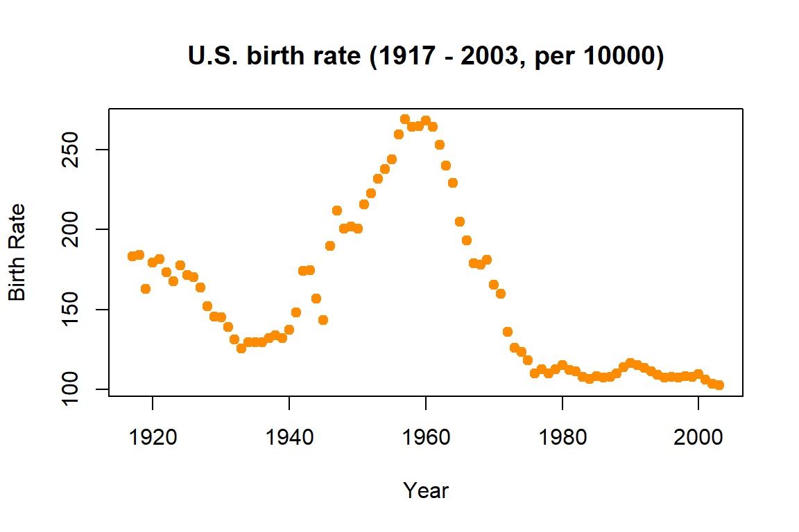

Chapter 2 Basics of Probability and Statistics
2.1 Random Number Generation
Random number generation is important for statistical simulation. R provides random number generators for many commonly used distributions, such as binomial (rbinom), normal (rnorm), t (rt) etc. The syntax is usually a letter “r” followed by the name of the distribution.
# generate 10 independent Bernoulli random variables as a vector
rbinom(n=10, size = 1, prob = 0.5)
## [1] 1 1 1 1 1 0 0 1 1 1
# 4 independent random standard normal variables
rnorm(n=4)
## [1] -0.14868630 -0.03086009 2.14017210 0.25368047Setting the seed before generating random numbers will allow us to replicate the results when necessary.
# after setting the seed, the two runs will generate exactly the same "random" numbers
set.seed(1)
rnorm(n=4, mean = 1, sd = 2)
## [1] -0.2529076 1.3672866 -0.6712572 4.1905616
set.seed(1)
rnorm(n=4, mean = 1, sd = 2)
## [1] -0.2529076 1.3672866 -0.6712572 4.19056162.2 Summary Statistics and Data Exploration
Statistical functions that provides a summary of the data
x = rnorm(n=100, mean = 1, sd = 2)
y = rnorm(n=100, mean = 2, sd = 1)
sum(x)
## [1] 118.4815
mean(x)
## [1] 1.184815
var(x)
## [1] 3.142351
median(x)
## [1] 1.148906
quantile(x, c(0.25, 0.5, 0.75))
## 25% 50% 75%
## 0.0115149 1.1489063 2.2746083
cor(x, y)
## [1] -0.04261199For discrete data, we can use the table function
library(ElemStatLearn)
data(SAheart)
table(SAheart$famhist)
##
## Absent Present
## 270 192
table(SAheart[, c("famhist","chd")])
## chd
## famhist 0 1
## Absent 206 64
## Present 96 962.3 Summary Statistics and Data Exploration
Fisher’s exact test and the Chi-square test are tests of independence between two nominal variables.
# We can test the association between family history (famhist) and
# the indicator of coronary heart disease (chd)
# using Fisher's Exact
fisher.test(table(SAheart[, c("famhist","chd")]))
##
## Fisher's Exact Test for Count Data
##
## data: table(SAheart[, c("famhist", "chd")])
## p-value = 6.658e-09
## alternative hypothesis: true odds ratio is not equal to 1
## 95 percent confidence interval:
## 2.119573 4.891341
## sample estimates:
## odds ratio
## 3.209996
# or the Chi-square test
chisq.test(table(SAheart[, c("famhist","chd")]))
##
## Pearson's Chi-squared test with Yates' continuity correction
##
## data: table(SAheart[, c("famhist", "chd")])
## X-squared = 33.123, df = 1, p-value = 8.653e-09For continuous variables, data visualization can be very helpful. There are many different ways to customize a plot, such as changing the color, shape, label, etc. For more advanced features, the R package ggplot2 is a very popular choice.
# We use the birthrate data introduced earlier for this example
birthrate = read.csv("data/birthrate.csv")
plot(birthrate, pch = 19, col = "darkorange", ylab = "Birth Rate",
main = "U.S. birth rate (1917 - 2003, per 10000)")
Correlations and correlation plots can be used to summarize more varaibles. However, becareful that factors may not be supported by this feature and could cause errors.
suppressMessages(library(PerformanceAnalytics))
chart.Correlation(SAheart[, c(1:3)], histogram=TRUE, pch="+")
A simple linear regression assumes the underlying model \[Y = \beta X + \epsilon.\] With observed data, we can estimate the regression coefficients:
# the lm() function is the most commonly used
fit = lm(y~x)
summary(fit)
##
## Call:
## lm(formula = y ~ x)
##
## Residuals:
## Min 1Q Median 3Q Max
## -1.9355 -0.6563 -0.1596 0.5764 2.3170
##
## Coefficients:
## Estimate Std. Error t value Pr(>|t|)
## (Intercept) 2.03700 0.11874 17.156 <2e-16 ***
## x -0.02359 0.05588 -0.422 0.674
## ---
## Signif. codes: 0 '***' 0.001 '**' 0.01 '*' 0.05 '.' 0.1 ' ' 1
##
## Residual standard error: 0.9856 on 98 degrees of freedom
## Multiple R-squared: 0.001816, Adjusted R-squared: -0.00837
## F-statistic: 0.1783 on 1 and 98 DF, p-value: 0.6738A graphical view usually helps understand the data better. There are a variety of ways to customize your plot, such as color and shape.
plot(x, y, xlab = "x", ylab = "y", main = "A plot", col = "darkorange", pch = 19)
abline(a = fit$coefficients[1], b = fit$coefficients[2],
col = "deepskyblue", lty = 2, lwd = 2)
legend("topleft", c("observed points", "fitted line"), lty = c(NA, 2),
pch = c(19, NA), col = c("darkorange", "deepskyblue"))
R can read-in data from many different sources such as , , etc. For example, can be used to import files. The first argument should be specified as the path to the data file, or just the name of the file if the current working directory is the same as the data file. R objects, especially matrices, can be saved into these standard files. Use functions such as and to perform this. We can also save any object into file, which can be loaded later on. To do this try functions and .
One of the most important features of R is its massive collection of packages. A package is like an add-on that can be downloaded and installed and perform additional function and analysis.
# The MASS package can be used to generate multivariate normal distribution
library(MASS)
P = 4; N = 200
V <- 0.5^abs(outer(1:P, 1:P, "-"))
X = as.matrix(mvrnorm(N, mu=rep(0,P), Sigma=V))
head(X, 3)
## [,1] [,2] [,3] [,4]
## [1,] 1.233066 1.5191953 2.2469074 1.5273147
## [2,] -2.238075 -1.8347564 -1.4593319 -1.8318204
## [3,] -1.181232 -0.3395079 0.2223336 -0.8824585